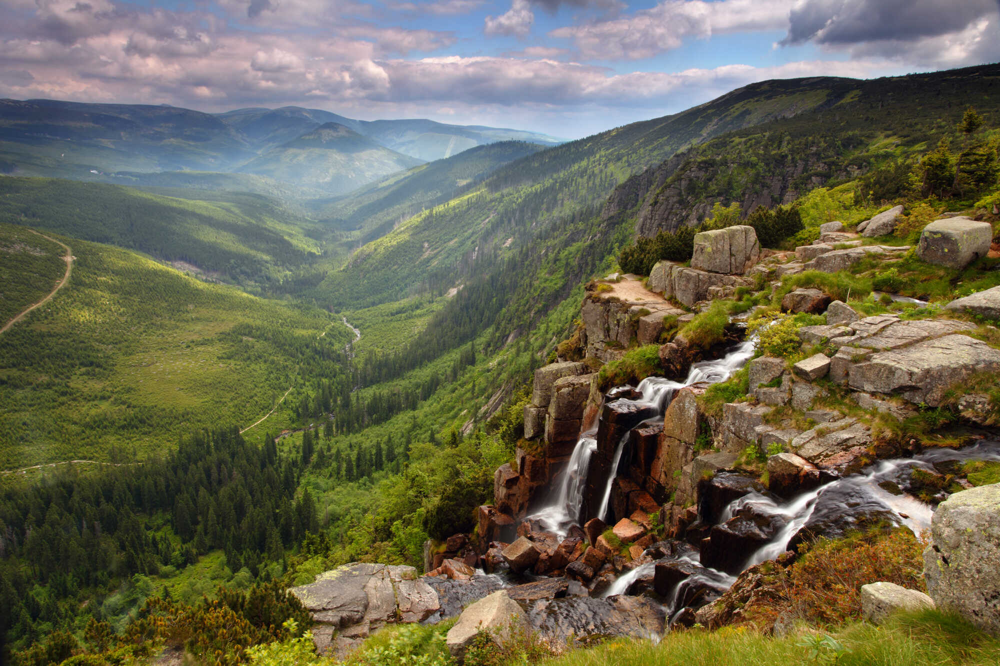
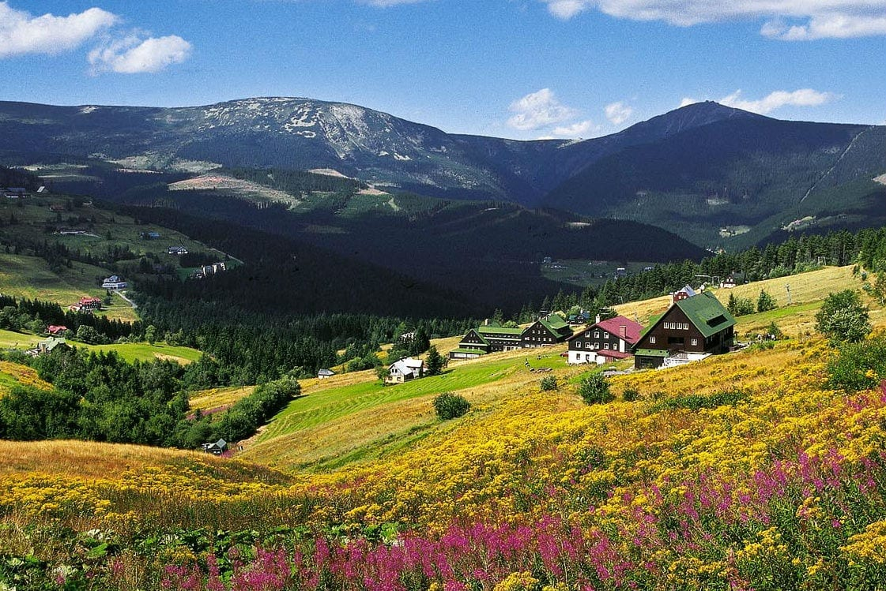
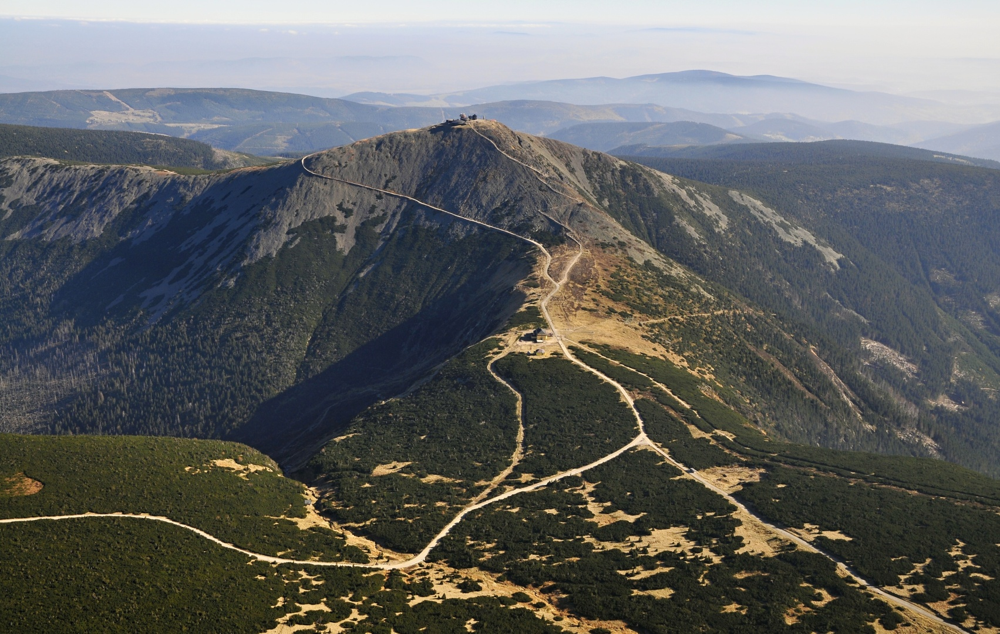
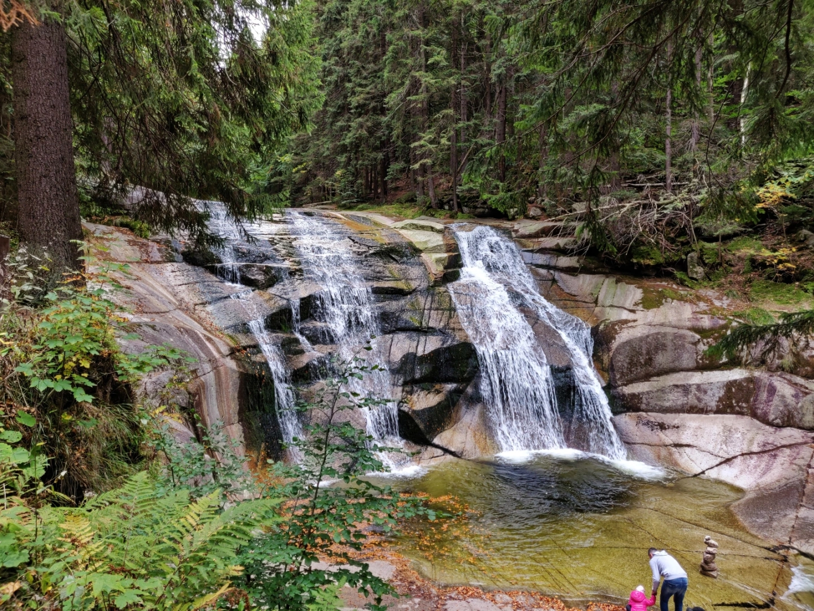

The highest mountain range in Czechia, known for its mountain trails, deep forests, waterfalls and the country's highest peak, Sněžka.
Krkonoše is a mountain range in nothern Czechia, along the border with Poland. Its landscape includes high mountain peaks, green valleys, forests and open mountain meadows.
The region is popular throughout the year. Visitors come for hiking and cycling in summer, while winter brings opportunities for skiing and other snow activities. Its varied landscapes make Krkonoše one of the most important natural destinations in Czechia.

Sněžka is the highest mountain in Czechia, reaching 1 603 metres above sea level. It stands near the Czech-Polish border and is one of the most famous landmarks of the Krkonoše mountains.
Visitors can reach the summit by hiking along mountain trails, with a cable car available from the Pec pod Sněžkou area. From the top, the views can strech across the surrounding mountains and valleys when the weather is clear.

Mumlavský Waterfall is a popular natural attraction near the mountain town of Harrachov. The Mumlava River flows over large granite rocks, creating a wide waterfall surrounded by forest.
A walking trail leads to the waterfall, making it an accessible destination for a short trip. The surrounding woodland and flowing water create a peaceful setting, especially during warmer months.

Krkonoše offers many opportunities to explore nature, from mountain trails and scenic viewpoints to watterfalls and traditional mountain villages. Visitors can discover places such as Špindlerův Mlýn, Pec pod Sněžkou and Harrachov.
The combination of high peaks, forests and mountain scenery makes Krkonoše a memorable destination for anyone who enjoys the outdoors. Whether visiting in summer or winter, the region offers a different experience in every season.